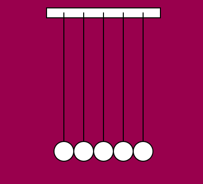
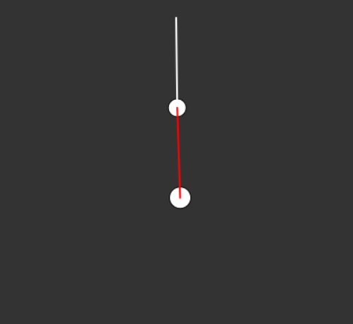

Science Concepts
-
Newton's Cradle
Click on the below image to view Newton's Cradle

Also known as the Executive Ball Clicker, Newton's Cradle works on the principle of Conservation of Momentum(mass times speed). This law states that when two objects collide, the momentum of those objects before the collision is the same as after it.
In simpler terms, when the first ball collides with the second one, the momentum is passed on from one ball to another till the last ball. Then, the last ball oscillates and passes the momentum back to the previous ball and the momentum reaches the first ball again.
-
Double Pendulum
Click on the below image to view Double Pendulum

At smaller angles, the double pendulum works on the principle of sine and cosine*. At larger angles, the first pendulum is dragging a weight along with it until the momentum slows down.
*(in trigonometry)Sine is the ratio of opposide upon hypotenuse. Cosine is the ratio of adjacent side upon hypotenuse.